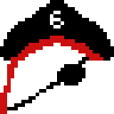

Team siKz
Development project.
Snapshots.
Here are the snapshots of each week.
Aut/Week 8
This week we had our initial meeting with all of the group members, we got each other's details, created a Discord and a GitHub page. We made sure each person knew what was exepected of them and had a rough idea of what they were going to do, we also got an idea of who was more confident in doing certain tasks.
Aut/Week 9
This week we started creating the website, we added basic images and information to it such as which libraries and software we will be using to create the game. We also met a few times this week to discuss the development cycle, how it will work in the team working environment and who was confident in doing which task. We also started work on the deliverables.
Aut/Week 10
This week we created the first test of the game, including a bootable window and a character that the user could move up and down the screen. Admittedly, this was incredibly basic, but a necessary starting point to get our minds working for how future develoment might work. This week we also started delegating roles to each team member and made sure they knew what they were doing. We had our first stakeholder meeting which allowed us to become more confident and start to generate more ideas of our own.
Spr/Week 1
This week no work on the project was done because of exams.
Spr/Week 2
This week we collaboratively designed our abstract class diagram, we ensured all team members had working development environments and if not we made sure they did. This week we also allocated coding workloads to those who felt more confident and up to the challenge, the more confident the person, the more challenging the problem.
Spr/Week 3
This week we allocated work on deliverables making sure each one was up to standard, we implemented damage calculations and collision, discussed how we would format certain deliverables. We then discussed which code still needed to be added, added comments to the codebase and made any final tweaks that needed to be done.